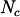
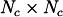
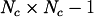
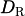
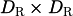

Data Structures
Elementary Data Types
Definition
The following data types are defined as C structures containing a single array of elements. These can be used to create fields in Include/spinor_field.h using the macro _DECLARE_FIELD_STRUCT.
Name |
Array of |
Size |
|---|---|---|
|
|
2 |
|
|
 |
|
|
 |
|
|
4 |
|
|
 |
|
|
 |
|
|
 |
|
|
|
|
|
4 |
Here corresponds to the number of colors and is the dimension of the fermion representation. The data type suNf can be real or complex depending on the representation being real or complex.
Every data type has a corresponding single precision data type, the name of which is obtained adding the suffix _flt.
Operations
Linear algebra operations require us to loop over the elements in the arrays of the structures. However, in order to achieve best performance, for-loops in bottleneck functions should be unrolled. As a result, these linear algebra functions have to be defined as macros, that expand the unrolled code. Since the number of iterations in the for-loop depends for many of the structures above on the number of colors and dimension of fermion representation, which have to be known at compile time. As a result, the definition of these macros depends on the compilation parameters.
In order to have different macros available depending on compilation parameters, we autogenerate them using a perl-script in Make/Utils.
TODO: Add more details on this somewhere else
The resulting macros can act both on single and double precision types. A list of macros can be found in the corresponding page in the function reference manual.
TODO: Since these are auto-generated, you have to first compile HiRep and then compile the function reference. This needs to be pointed out somewhere.
Field Data Types
In HiRep, field data is stored in field structs that contain an array of values on sites or links that will be allocated on the CPU and, if compiled with GPU acceleration, one that will be allocated on the GPU. The definitions of different fields are defined in LibHR/spinor_field.h. Available types are
Name |
Elementary Data Types |
|---|---|
|
|
|
|
|
|
|
|
|
|
|
|
|
|
|
|
… plus corresponding single precision types.
New field types can be declared by using the macro
#define _DECLARE_FIELD_STRUCT(_name, _type) \
typedef struct _##_name \
{ \
_type *ptr; \
geometry_descriptor *type; \
_MPI_FIELD_DATA \
_GPU_FIELD_DATA(_type) \
} _name
The _name will define the field’s new name, which can be anything, while the _type variable has to refer to a type that was defined in suN_types.h, listed in the previous section. _type defines the types of values on the lattice sites.
The field value copy of the CPU is defined by _type *ptr, which is a 1D array containing the field’s values at the lattice sites. The GPU copy is hidden behind the macro _GPU_FIELD_DATA(_type).
#define _GPU_FIELD_DATA(_type)
#ifdef WITH_GPU
#undef _GPU_FIELD_DATA
#define _GPU_FIELD_DATA(_type) _type *gpu_ptr;
#endif //WITH_MPI
We need this macro instead of outright declaring the copy because we do not want to have a GPU copy in the field structs if we are only compiling for CPU. As can be seen from the macro _GPU_FIELD_DATA(_type) is defined to return nothing, but in the case of compilation with GPUs, it is overwritten to give a 1D array called gpu_ptr, which can later be allocated on and accessed from the device.
Since memory access patterns have a high impact on application performance, the way that field data is stored on the GPU is different from how it is stored on the CPU in several ways that will be explained in the following. Further, in HiRep memory is managed manually instead of using a unified memory setup, which implies that from a kernel, only pointers to sites will be available but not the complete field structures. This has an impact on which functions and macros that work on the CPU are available to call from a CUDA kernel.
This means, that if we declare a spinor field
spinor_field *s;
we may access its geometry description and sites on the CPU from a regular host function
int main(void)
{
spinor_field *s;
// Query the value at the site with index 0
suNf_spinor *field_value = s->ptr;
// Check, whether the spinor field is odd
if (s->type == &glat_odd) printf("Spinor is odd.\n")
suNf_spinor *gpu_field_value = s->gpu_ptr;
// The following fails, because it points to memory allocated on the GPU
// and is therefore unavailable from the host.
suNf_vector spinor_comp = (*gpu_field_value).c[0];
}
In a kernel, it is impossible to check whether the spinor is even or odd. Every call to the spinor field structure will fail.
__global__ void example_kernel(spinor_field *s)
{
// This fails because s is a host pointer, unless it was transferred
// before being passed to the kernel.
suNf_spinor field_value = *(s->ptr);
// This fails because the geometry descriptor is saved on the host
if (s->type == &glat_odd) printf("Spinor is odd.\n");
// This fails, because s is located on the host and it is accessed in
// order to access the field
suNf_spinor *gpu_field_value = s->gpu_ptr;
}
The correct way to run a kernel that operates on the GPU field data copy is to pass the first site in the copy to the kernel and then access other sites. For example
__global__ void example_kernel(suNf_spinor *start)
{
int ix = blockIdx.x * blockDim.x + threadIdx.x;
// Get site with index ix
suNf_spinor *site = start+ix;
}
The index in the 1D array is bijectively mapped to the coordinates in space and time.